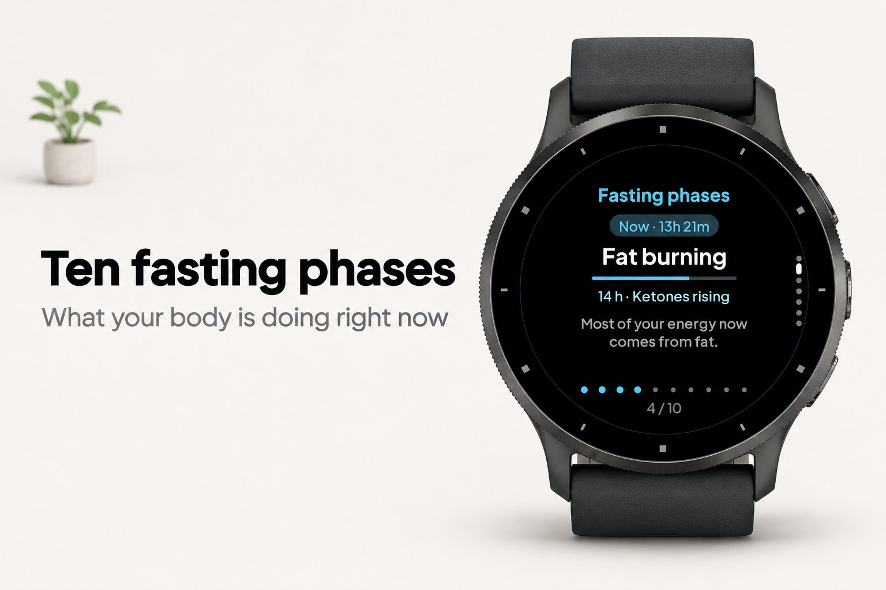
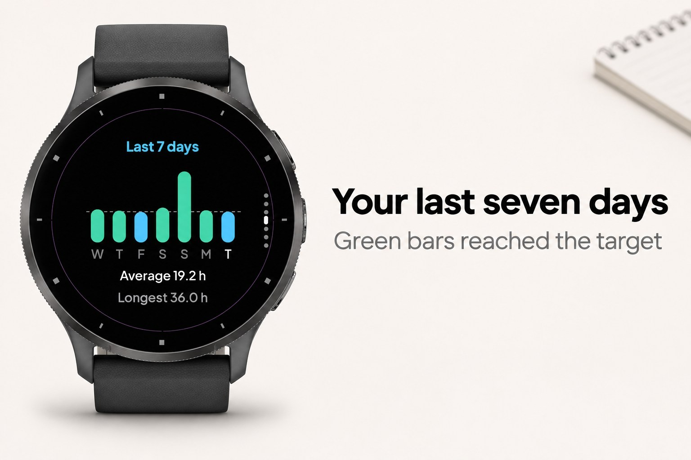
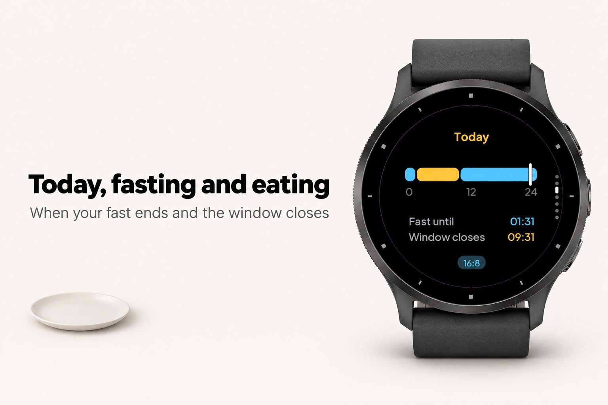
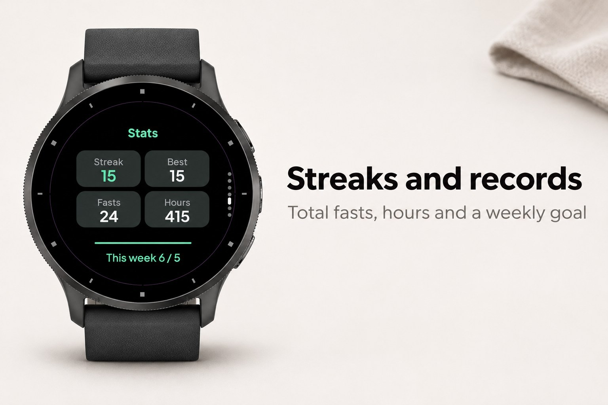

Fasted
Intermittent fasting timer, from 16:8 to Ramadan.





Fasted turns intermittent fasting into one clear number on your wrist: how long you have been fasting, how far you are from your goal, and what your body is doing right now.
Press START and the ring fills toward your target. Ten fasting phases explain what changes along the way, from blood sugar settling to deep autophagy. When you reach your goal your watch buzzes, and it warns you in time before your eating window closes.
Choose your rhythm
- 16:8, 18:6, 20:4, 14:10, OMAD or 12:12 — or set your own number of hours
- Fajr to Maghrib for Ramadan: your watch works out today's dawn and sunset from your position and wakes you for Suhoor
- A daily schedule with a fixed eating window, if you prefer to plan ahead
It runs itself
Switch on auto-start and auto-stop and the app follows your schedule, even while it is closed. Everything is set on the watch itself — protocol, schedule, alerts, weekly goal — so you rarely need your phone.
What you get back
- A seven-day chart, streaks, records and a weekly goal you set yourself
- Sixteen badges for hours fasted, willpower and consistency
- Your eating rhythm: the hours you actually eat, mapped across the day
- A glance view with your progress without opening the app
Interface in English, Dutch, German, French and Spanish. Everything stays on your watch: no account, no internet connection, no data sent anywhere.
Fasted is not medical advice. Talk to a doctor before fasting if you are pregnant, diabetic or taking medication.